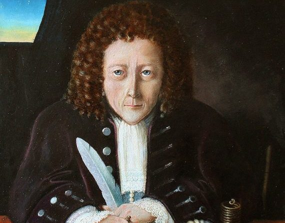

Robert Hooke
Robert Hooke.- Hooke, Robert (1635-1703), científico inglés, conocido por su estudio de la elasticidad. Hooke aportó también otros conocimientos en varios campos de la ciencia.
Nació en la isla de Wight y estudió en la Universidad de Oxford. Fue ayudante del físico británico Robert Boyle, a quien ayudó en la construcción de la bomba de aire. En 1662 fue nombrado director de experimentación en la Sociedad Real de Londres, cargo que desempeñó hasta su muerte. Fue elegido miembro de la Sociedad Real en 1663 y recibió la cátedra Gresham de geometría en la Universidad de Oxford en 1665. Después del gran incendio de Londres en 1666, fue designado supervisor de esta ciudad, y diseñó varios edificios, como la casa Montague y el hospital Bethlehem.
Hooke realizó algunos de los descubrimientos e invenciones más importantes de su tiempo, aunque en muchos casos no consiguió terminarlos. Formuló la teoría del movimiento planetario como un problema de mecánica, y comprendió, pero no desarrolló matemáticamente, la teoría fundamental con la que Isaac Newton formuló la ley de la gravitación. Entre las aportaciones más importantes de Hooke están la formulación correcta de la teoría de la elasticidad (que establece que un cuerpo elástico se estira proporcionalmente a la fuerza que actúa sobre él), conocida como ley de Hooke, y el análisis de la naturaleza de la combustión. Fue el primero en utilizar el resorte espiral para la regulación de los relojes y desarrolló mejoras en los relojes de péndulo. Hooke también fue pionero en realizar investigaciones microscópicas y publicó sus observaciones, entre las que se encuentra el descubrimiento de las células vegetales.